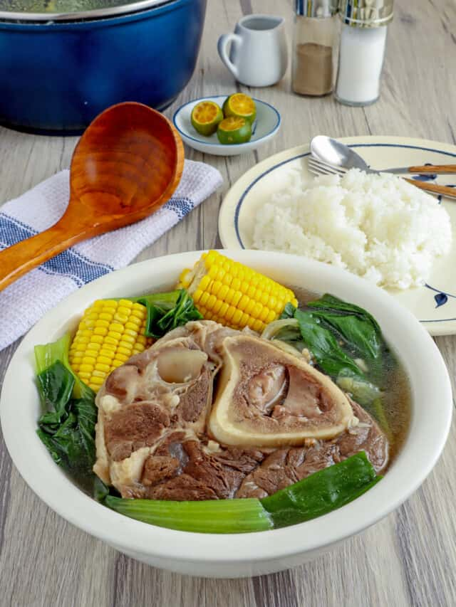

Here is an image of Beef Bulalo
Beef Bulalo or boiled beef shank soup is a popular Filipino beef soup. It is good to have on a cold or rainy day. This dish is composed of tender beef shank along with vegetables such as Napa cabbage, long green beans, and corn.
Ingredients
- 2 1/2 lbs. beef shanks
- 1 knorr beef cube or 1 cup of beef broth
- 6 to 8 leaves of Napa cabbage
- 1 sweetcorn
- 15 to 18 pieces green beans
- 1 medium yellow onion
- 1 tablespoon whole peppercorn
- 3 tablespoons fish sauce
- 8 cups water
Procedure
- Boil water in a pressure cooker.
- Add onions and whole peppercorn. Cook for 3 minutes.
- Add beef shank. Let boil.
- Add Knorr pork cube or the beef broth. Stir. Cover the pressure cooker. Pressure cook for 40 to 45 minutes.
- Remove the cover once pressure is out. Add corn. Cook for 15 minutes.
- Put the green beans into the cooker and pour fish sauce. Stir. Continue to cook for 5 minutes.
- Arrange fresh Napa cabbage (pechay baguio) in a serving bowl. Transfer the contents of the pressure cooker in the same bowl. Serve hot with patis (fish sauce), calamansi or lemon, and (chili)siling labuyo.
Go back to main page